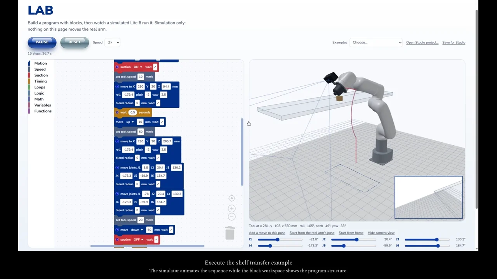
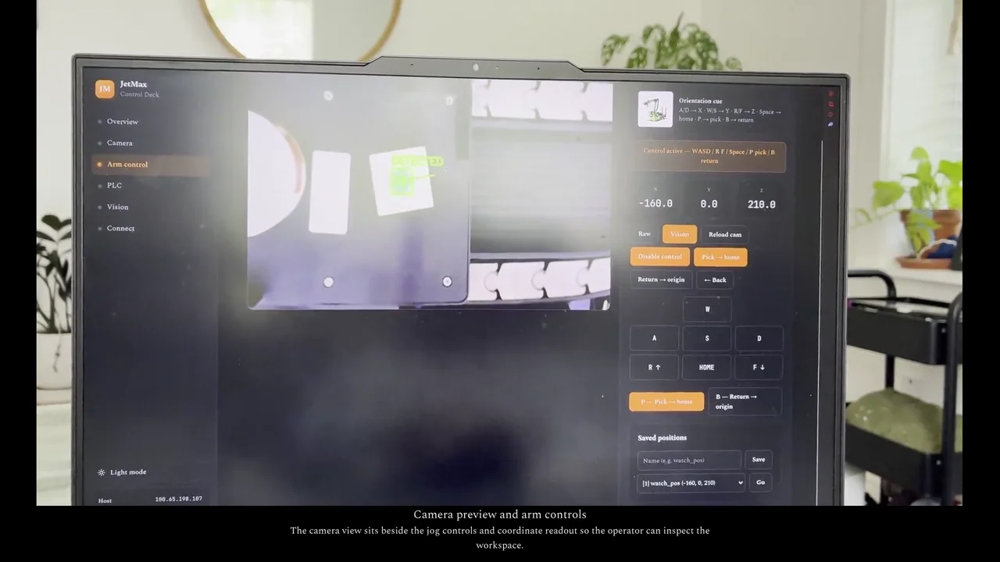
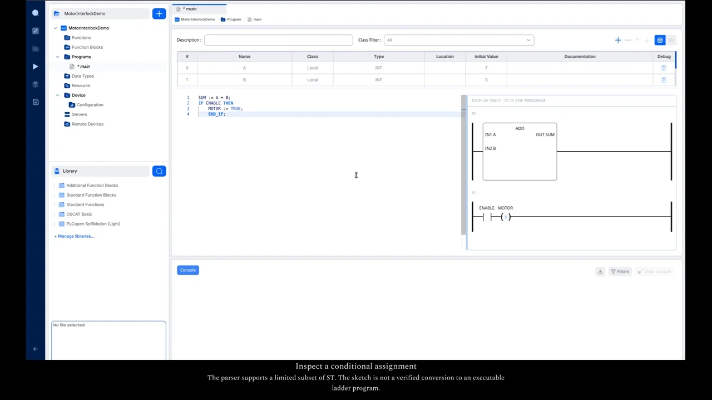
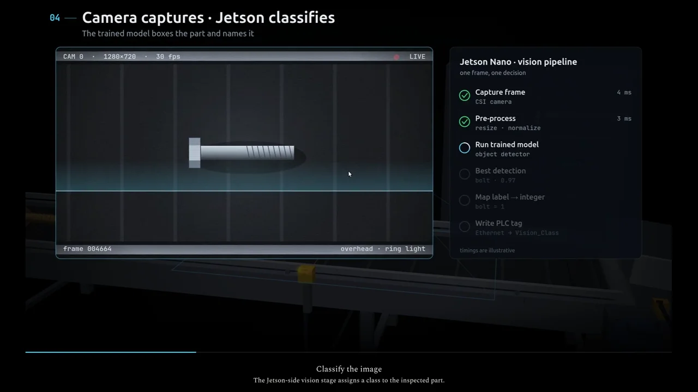
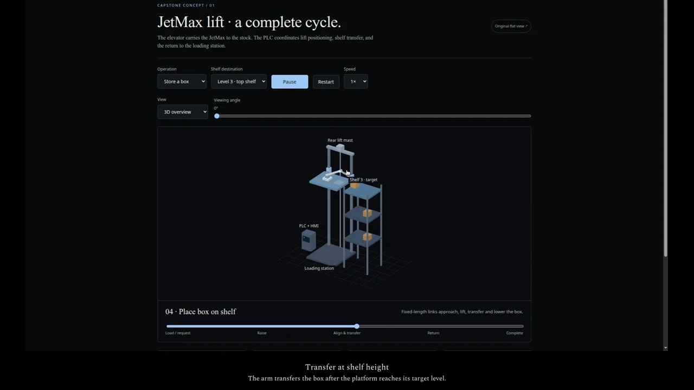
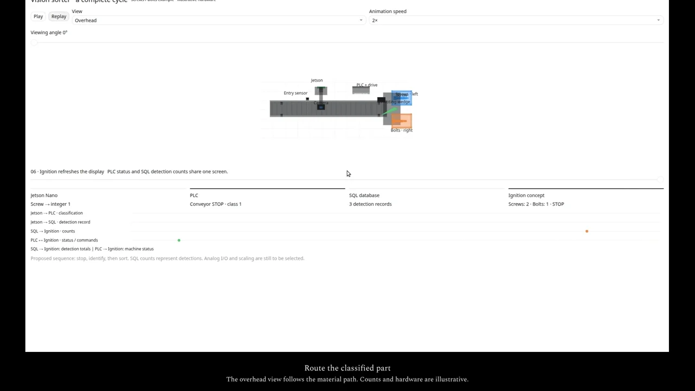
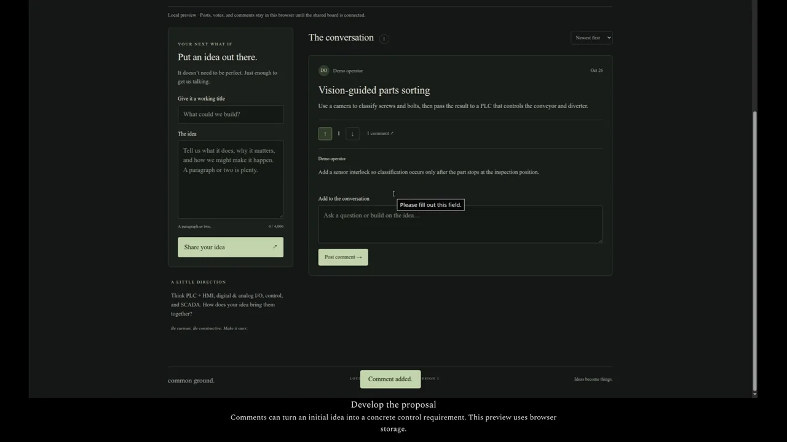
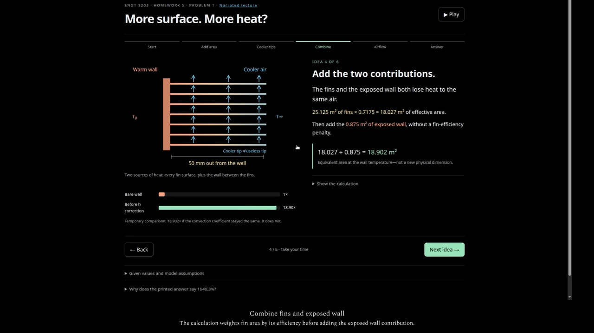
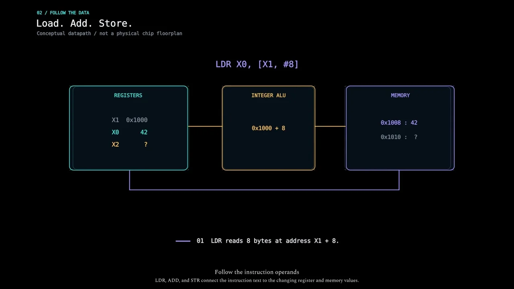
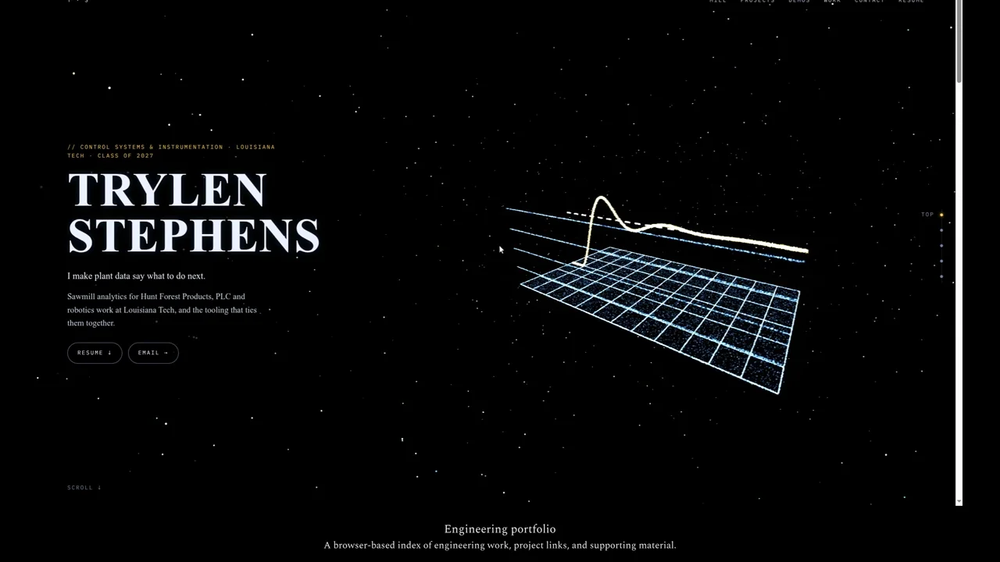

Lite6 Lab Deck
Simulation · 35 seconds
A Blockly shelf-transfer program runs beside a 3D Lite6 model and simulated wrist-camera view.
Short, captioned walkthroughs of my robotics tools, controls concepts, and educational applications. Each entry links to its source and explains what the recording demonstrates.

A Blockly shelf-transfer program runs beside a 3D Lite6 model and simulated wrist-camera view.

Existing monitor footage shows the JetMax dashboard, operator controls, and camera preview.

Local ST edits update the experimental ladder sketch. The agent panel is shown without a model request.

Selected stages trace a part classification from camera inspection to PLC-controlled routing.

Store and retrieve sequences show the proposed lift, shelf transfer, and return workflow.

A proposed camera, conveyor, diverter, and reporting sequence shown from two views.

Post an idea, vote, and develop the proposal through comments using synthetic data and browser storage.

Step through exposed area, fin efficiency, convection coefficients, and the worked result.

Follow ARMv8-A load, add, and store data flow through registers, the ALU, and memory.

Browse the public engineering portfolio and project index.